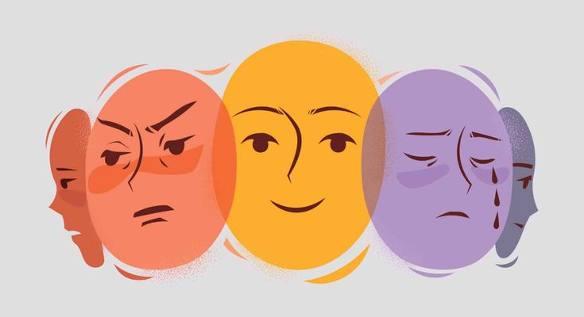

Sentir todo intensamente no es una debilidad, es una señal de que estás vivo. Aprender a regularlo es tu superpoder
El manejo emocional es la capacidad de reconocer, comprender y regular nuestras emociones, especialmente en situaciones de alto estrés o conflicto. Es una de las cinco competencias clave de la inteligencia emocional y representa un pilar fundamental en el desarrollo personal y profesional.
No se trata de reprimir lo que sentimos, sino de aprender a canalizar nuestras emociones de manera constructiva. Esto permite responder en lugar de reaccionar, y mantener una perspectiva clara aun cuando las circunstancias son adversas.
Identifica y pon nombre de la emocion
Reconoce con precisión lo que sientes (por ejemplo, frustración o tristeza) en lugar de decir solo que te sientes mal. Presta atención a las sensaciones en tu cuerpo
Practica la respiración consciente
• Calma tu cuerpo físico: Al hacer la exhalación más larga que la inhalación, le mandas una señal directa
a tu sistema nervioso de que estás a salvo. El corazón baja su ritmo y los músculos se relajan.• Detiene los pensamientos acelerados: Tu cerebro no puede concentrarse en dos cosas intensas a la vez. Al obligarlo a enfocarse en el aire que entra y sale, lo sacas del problema que te estaba estresando.
• Te evita cometer errores: Te da unos segundos de oro (una "pausa") entre lo que te pasa y lo que vas a hacer. Así respondes con la cabeza fría en lugar de reaccionar gritando o actuando por impulso
La "Regla de los 90 segundos"
Lo que pasa: Cuando te enojas, tu cerebro suelta un "líquido" (químicos como la adrenalina) que corre por tu cuerpo. Eso hace que te cicle el corazón rápido o te sientas caliente.
• Ese líquido tarda exactamente 90 segundos (un minuto y medio) en desaparecer de tu cuerpo.
• La clave: Si pasados los 90 segundos sigues enojado, es porque tú decides seguir pensando en lo que te molestó.
• Cómo usarla: Cuando te enojes, no hables ni actúes. Quédate quieto, respira y deja pasar un minuto y medio sin alimentar el problema en tu mente. La ola bajará sola.

Está bien no estar bien todos los días. Permítete sentir.